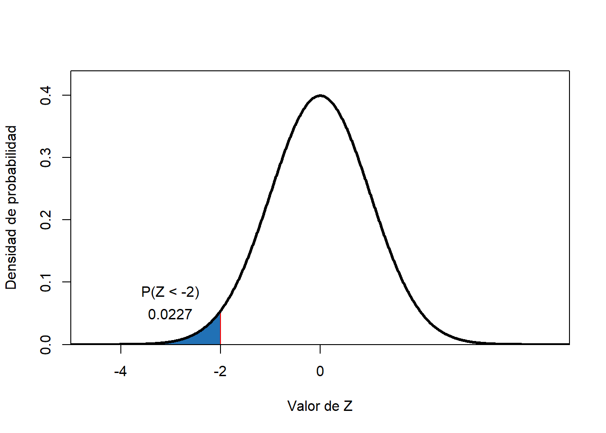
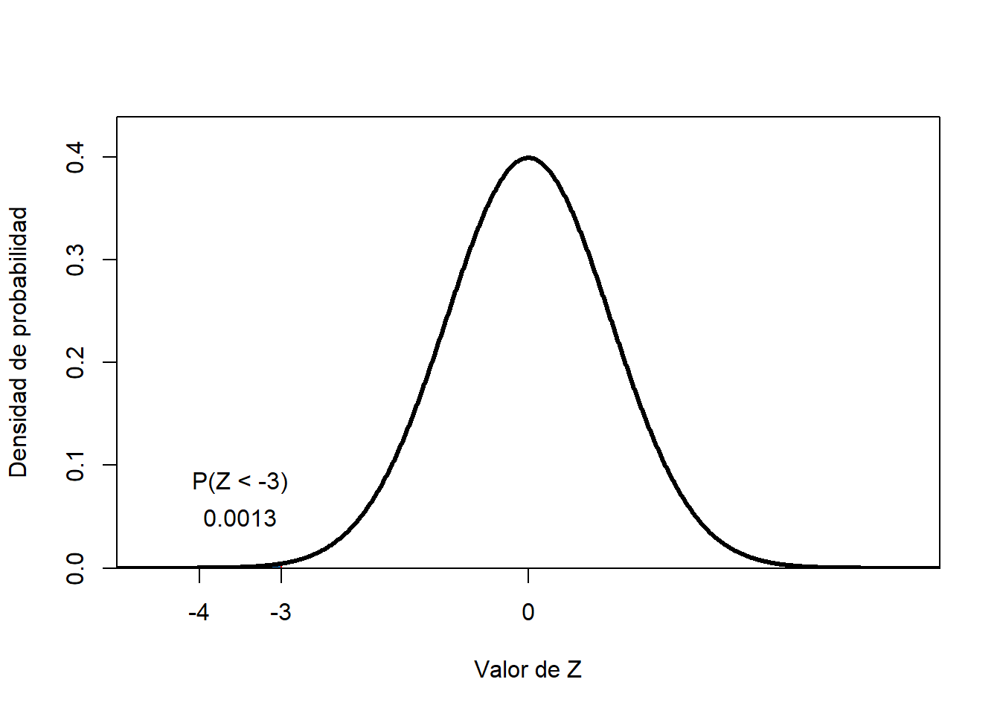
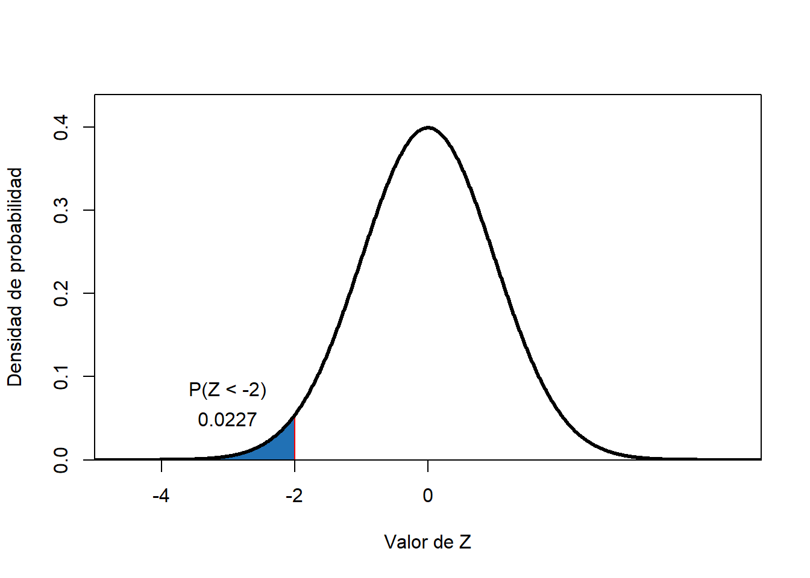
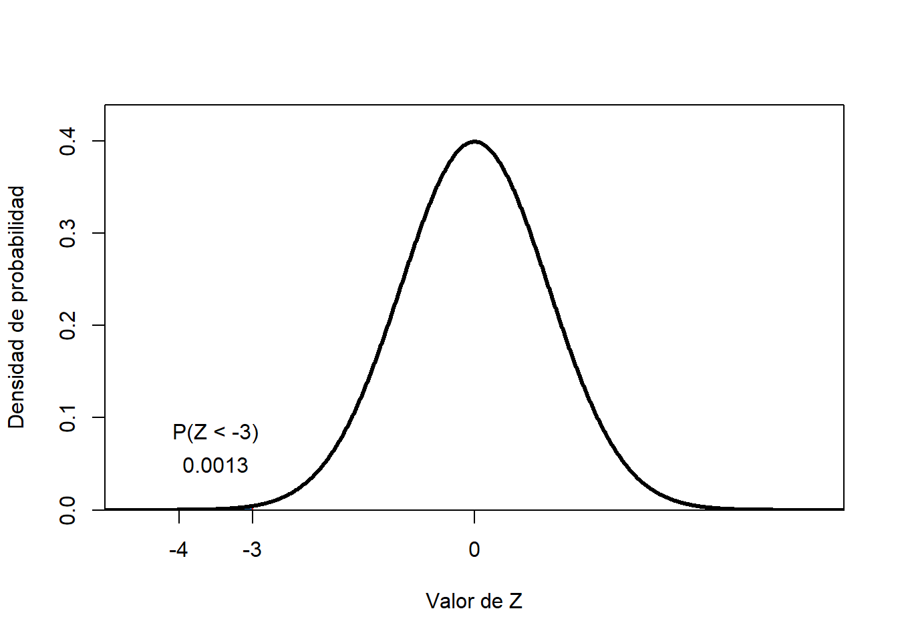

Capítulo 3 Estimación de probabilidades
La probabilidad estimada por el modelo de distribución normal se obtiene por integración bajo la curva. Así, \(P(a<x<b)=\int_a^bf(x)dx\).
Para el caso de una \(X \,\ \tilde \,\ \eta \ (\mu; \sigma^2)\),
\[P(a< x <b)= \int_{a}^b \frac{1}{({2 \pi})^{1/2} \sigma}e^{-\frac{1}{2}({\frac{x- \mu}{\sigma}})^2}dx\]
¿Cuál es la probabilidad de que \(Z \,\ \tilde \,\ \eta \ (\mu= 0; \sigma^2 = 1)\) asuma valores inferiores a -1?
¿Cuál es la probabilidad de que \(Z \,\ \tilde \,\ \eta \ (\mu= 0; \sigma^2 = 1)\) asuma valores inferiores a -2?
¿Cuál es la probabilidad de que \(Z \,\ \tilde \,\ \eta \ (\mu= 0; \sigma^2 = 1)\) asuma valores inferiores a -3?
 

______________________________________________________________________